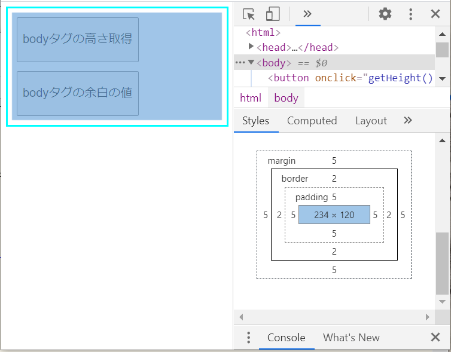

メモ：高さの取得
エレメントの高さを取得するプロパティ
.clientHeight paddingを含んだ高さ
.scrollHeight paddingと画面上に未表示のコンテンツを含む高さ
.offsetHeight border、padding、スクロールバーを含んだ高さ
scrollHeightでは、marginとborderの値は含まれないので、
iframeの高さ指定に利用した時に、内包要素がmarginを使っているか否かでスクロールバーが出たり出なかったりしていたのだろう
test.htmlで確認
test.htmlのコード
style属性の値を取得するプロパティ（上記
getMargin() で使用）
window.getComputedStyle( Element ).Property
実行（ボタンをクリックで、実際の値を表記）
Chromeデベロッパーツールでbodyタグの実際のサイズを確認

- margin
- border
- padding
- body
-
- 合計
bodyタグ全体（box）の高さは144pxということになる
offsetHeightの値にmarginの値を加えれば、bodyのboxの値が取得できる
テキストファイルだと、まだスクロールバーが表示されてしまう
htmlファイルならドンピシャでサイズが合わせられるようになったが、
テキストファイルだとそうならない
htmlファイルではないから、marginとかpaddingなんて関係ないのだろう
他の高さを取得するプロパティ
ウィンドウ（ブラウザ）の高さを取得するプロパティ
window.innerHeight スクロールバーを含んだブラウザウィンドウの高さ
window.outerHeight タブやブックマークバーなどを含んだブラウザウインドウ外側の高さ
画面の高さを取得するプロパティ
window.parent.screen.height (PC・スマホなどの)画面の高さ
window.screen.height (PC・スマホなどの)画面の高さ
screen.height (PC・スマホなどの)画面の高さ
screen.avaliHeight モニターの利用可能な領域の高さ
３つの screen.height は、ほぼ同じらしい
継続調査
上記のプロパティでも、iframeでテキストファイルの高さがぴたりと合わせられないので継続調査する
解決編へまた、今回知ったbox-sizingというのも面白そうなのでいつか調べたい
参考になったサイト
jQuery・JavaScript 高さ、横幅取得方法
Javascript で高さ幅とか
[JavaScript] ページの横幅、高さ、スクロール量を取得する
[JavaScript]幅と高さを取得 / 設定する方法
marginとpaddingとは？基礎から解説！ゼロから始めるHTML/CSS講座Vol08
margin？padding？ボックスモデルを理解しよう！あとbox-sizingが便利だよ、って話